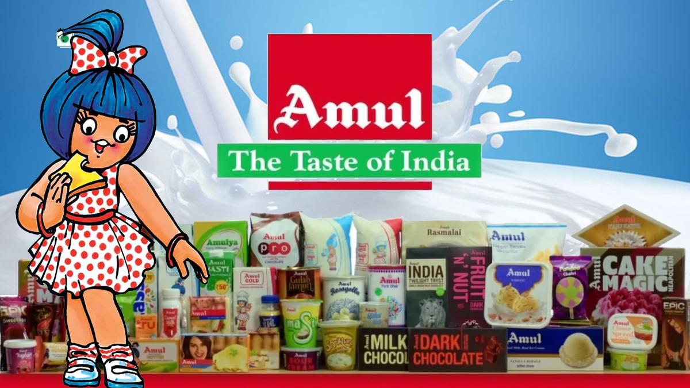
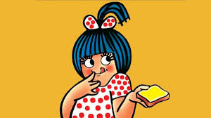
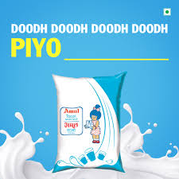

How India's dairy giant built one of the world's longest-running brand mascots and repositioned milk for a generation.

Amul is not just a dairy brand; it is one of the most powerful examples of long-term brand building in India. Over decades, Amul has created campaigns that moved beyond product advertising and became part of public memory, culture, and daily conversation.
This case study presents a complete strategic understanding of two of Amul's most iconic campaigns: the Amul Girl – Utterly Butterly / Topical Campaign and the Doodh Doodh / Piyo Glass Full Milk Campaign. These campaigns are analysed using a comprehensive professional framework covering strategy, messaging, creatives, channels, and funnel systems.
The biggest lesson from both case studies is that great campaigns do not begin with creative ideas. They begin with consumer insight and strategic clarity. Amul succeeded because every campaign started with a clear understanding of the problem to solve.
The Amul Girl campaign is one of the most successful brand campaigns in Indian advertising history. Its biggest strength is that it was never designed as a one-time promotion — it became a repeatable communication system that stays relevant year after year.
The key strategic insight was that people remember emotions faster than features. Rather than telling consumers why the butter was better, Amul created a mascot that made people smile. The campaign's unique power came from its ability to react to current events — sports victories, political moments, movie releases — transforming the brand into a cultural commentator.
"The audience was not waiting for an advertisement — they were waiting for the next Amul topical. This is a rare achievement in branding."
From a funnel perspective: visibility created recall, recall created trust, and trust influenced purchase decisions. The repeated topical format functioned like modern retargeting — the audience kept seeing fresh brand communication without tuning out.

The second campaign is one of Amul's best examples of market repositioning. At the time, milk was increasingly seen as an ordinary household product, challenged by fast-growing soft drinks and packaged beverages.
The strategic objective was to make milk modern, desirable, and relevant again for urban households and children whose beverage choices were shifting toward colas and juices. The market insight was sharp: people did not dislike milk — they no longer found it aspirational.
"Instead of selling milk as a basic necessity, the campaign repositioned it as a healthy, energetic daily choice — transforming a commodity into a lifestyle decision."
The memorable jingle and repetitive line structure improved recall significantly. Audio branding played a major role — even years later, people still remember the campaign's musical identity. Mass television exposure combined with strong recall through music drove habitual household consumption.

Both campaigns began with a deep consumer truth — people remember emotions faster than features, and aspirational positioning can transform any product category.
The Amul Girl was never a single ad — it was a communication platform. A consistent mascot with evolving topical content created endless freshness without brand fatigue.
Amul made itself relevant to every national conversation — politics, sports, cinema. This transformed the brand from advertiser to cultural voice, earning organic attention.
The Doodh Doodh jingle proved that audio branding creates deep, long-lasting recall. The melody became inseparable from the product in consumers' minds.
Originally outdoor hoardings, the same creative system naturally scaled to digital and social media — proving the power of platform-agnostic brand thinking.
Amul chose brand equity over short-term sales, creating multi-generational loyalty. Each campaign built on the previous, compounding trust over decades.
Amul's success demonstrates that the best brand campaigns are not built on clever creatives alone. They are built on clarity of insight, strategic precision, and long-term commitment to a consistent identity.
The Amul Girl campaign is stronger in terms of longevity, recall, and scalability because it became a communication platform rather than a single campaign. The Doodh Doodh campaign is stronger as a product-category revival strategy.
For modern brands, the lesson is this: own an emotion, stay culturally relevant, and build a system — not just an ad. That is what creates generational brand equity.
At Brand Business Talk, we help brands with research, strategy, market insights, and growth recommendations. Let's build your brand growth strategy together.